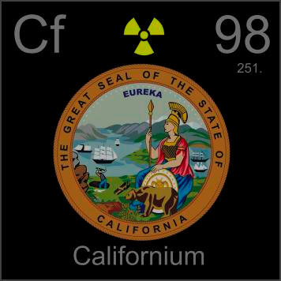

HOME
PREVIOUS
NEXT

Californium
Atomic Weight: 251[note]
Density: 15.1 g/cm3
Melting Point: 900 °C
Boiling Point: N/A
Californium is named after the state of California, home of UC Berkeley where it was discovered. It is used as a convenient portable neutron source for detection of precious metals and in oil well logging.